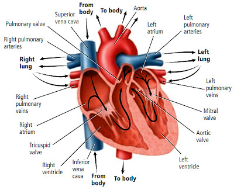
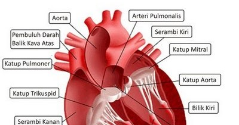
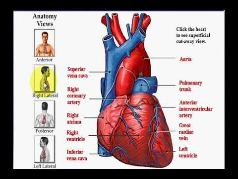

Jantung - Wikipedia bahasa Indonesia, ensiklopedia bebas
2021.06.08 01:06
Jantung
Dari Wikipedia bahasa Indonesia, ensiklopedia bebas Loncat ke navigasi Loncat ke pencarian Artikel ini membutuhkan rujukan tambahan agar kualitasnya dapat dipastikan . Mohon bantu kami untuk mengembangkan artikel ini dengan cara menambahkan rujukan ke sumber tepercaya . Pernyataan tak bersumber bisa saja dipertentangkan dan dihapus.Cari sumber: "Jantung" – berita · surat kabar · buku · cendekiawan · JSTOR ( Pelajari cara dan kapan saatnya untuk menghapus pesan templat ini ) Jantung Jantung manusia Rincian Sistem Sirkulasi Arteri Aorta , [a] pulmonary trunk dan arteri pulmoner kanan dan kiri [b] Arteri koroner kanan , arteri koroner kiri utama [c] Vena Vena kava superior , vena kava inferior , [d] vena pulmoner kanan dan kiri, [e] vena kardiak besar , vena kardiak tengah , vena kardiak kecil , vena kardiak anterior . [f] Saraf Accelerans nerve , Vagus nerve Pengidentifikasi Bahasa Latin cor Yunani kardía (καρδία) MeSH D006321 TA A12.1.00.001 Daftar istilah anatomi [ sunting di Wikidata ] Suara jantung normal Suara jantung normal didengar melalui stetoskop Bermasalah memainkan berkas-berkas ini? Lihat bantuan media .
Jantung ( bahasa Latin : cor ) adalah sebuah rongga, rongga organ berotot yang memompa darah lewat pembuluh darah oleh kontraksi berirama yang berulang. Darah menyuplai okisgen dan nutrisi pada tubuh, juga membantu menghilangkan sisa-sisa metabolisme. Istilah kardiak berarti berhubungan dengan jantung , dari kata Yunani cardia untuk jantung . Jantung adalah salah satu organ manusia yang berperan dalam sistem peredaran darah, terletak di rongga dada agak sebelah kiri.
Pada manusia, mamalia , dan burung , jantung dibagi menjadi empat ruas: atrium atas kanan dan kiri; dan ventrikel bawah kanan dan kiri. Pada umumnya atrium dan ventrikel kanan disebut jantung kanan, dan sisanya disebut jantung kiri. Ikan hanya memiliki dua ruas, sebuah atrium dan sebuah ventrikel, sementara reptil memiliki tiga ruas. Pada jantung yang sehat darah mengalir satu arah melalui pembuluh darah. Terdapat sebuah kantung pembungkus yang melindungi jantung, perikardium , yang juga mengandung sedikit cairan. Dinding jantung tersusun atas tiga lapisan: epikardium, miokardium, dan endokardium.
Jantung memompa darah melewati dua sistem sirkulasi. Darah yang berasal dari sistem peredaran darah besar mengandung sedikit oksigen dan memasuki atrium kanan melalui vena kava superior dan inferior menuju ventrikel kanan. Dari sini darah dipompa menuju paru-paru, tempat darah memperoleh oksigen dan meninggalkan karbon dioksida . Darah yang sudah mengandung oksigen kembali menuju atrium kiri, melewati ventrikel kiri dan dipompa menuju seluruh tubuh melalui aorta —di mana oksigen dipakai dan melalui metabolisme menjadi karbon dioksida. Ditambah lagi, darah juga membawa nutrisi dari hati menuju berbagai organ tubuh, sementara membawa zat sisa menuju hati dan ginjal. Normalnya, jumlah darah yang terpompa menuju paru-paru sama dengan jumlah darah yang terpompa ke seluruh tubuh. Pembuluh vena memompa darah menuju jantung dan membawa darah yang kaya karbon dioksida - kecuali vena pulmonaris dan vena pada sistem pencernaan. Arteri membawa darah keluar jantung, membawa oksigen selain pada arteri pulmonaris. Jarak yang jauh dari jantung membuat pembuluh vena memiliki tekanan yang lebih kecil dari pembuluh arteri. Ketika beristirahat, jantung berdetak kurang lebih 72 kali per menit. Latihan fisik biasanya mengangkat jumlahnya, tetapi jumlah melambat selama beberapa waktu, yang baik untuk jantung.
Penyakit kardiovaskular adalah penyebab kematian yang umum pada tahun 2008, membawa 30% manusia pada kematian. Diikuti oleh penyakit pembuluh koroner dan stroke. Penyebab utamanya adalah: merokok , obesitas , latihan yang kurang, kolesterol tinggi, tekanan darah tinggi , diabetes , dan lain-lain. Diagnosis dari kardiovaskular sering kali dilakukan dengan stetoskop , ECG atau melalui pendengaran ultrasonik . Spesial yang fokus pada penyakit jantung disebut kardiologis , meskipun dibutuhkan spesialis lain untuk menanganinya.
Daftar isi
1 Permukaan jantung 2 Struktur internal jantung 3 Cara kerja jantung 4 Seputar kesehatan jantung 4.1 Penyakit jantung 4.1.1 Serangan jantung 4.2 Penanggulangan 5 Lihat pula 6 Catatan 7 Referensi 8 Pranala luarPermukaan jantung [ sunting | sunting sumber ]
Bagian-bagian dari jantungJantung adalah satu otot tunggal yang terdiri dari lapisan endothelium. Jantung terletak di dalam rongga torakik, di balik tulang dada . Struktur jantung berbelok ke bawah dan sedikit ke arah kiri. Massanya kurang lebih 300 gram, besarnya sebesar kepalan tangan.
Jantung hampir sepenuhnya diselubungi oleh paru-paru , tetapi tertutup oleh selaput ganda yang bernama perikardium, yang tertempel pada diafragma . Lapisan pertama menempel sangat erat kepada jantung, sedangkan lapisan luarnya lebih longgar dan berair, untuk menghindari gesekan antar organ dalam tubuh yang terjadi karena gerakan memompa konstan jantung.
Jantung dijaga di tempatnya oleh pembuluh-pembuluh darah yang meliputi daerah jantung yang merata/datar, seperti di dasar dan di samping. Dua garis pembelah (terbentuk dari otot) pada lapisan luar jantung menunjukkan di mana dinding pemisah di antara serambi dan bilik jantung.
Struktur internal jantung [ sunting | sunting sumber ]
Secara internal, jantung dipisahkan oleh sebuah lapisan otot menjadi dua belah bagian, dari atas ke bawah, menjadi dua pompa. Kedua pompa ini sejak lahir tidak pernah tersambung. Belahan ini terdiri dari dua rongga yang dipisahkan oleh dinding jantung. Maka dapat disimpulkan bahwa jantung terdiri dari empat rongga, serambi kanan & kiri dan bilik kanan & kiri.
Dinding serambi jauh lebih tipis dibandingkan dinding bilik karena bilik harus melawan gaya gravitasi bumi untuk memompa dari bawah ke atas dan memerlukan gaya yang lebih besar untuk mensuplai peredaran darah besar, khususnya pembuluh aorta, untuk memompa ke seluruh bagian tubuh yang memiliki pembuluh darah.
Tiap serambi dan bilik pada masing-masing belahan jantung dipisahkan oleh sebuah katup. Katup di antara atrium kanan dan bilik kanan disebut katup trikuspidalis atau katup berdaun tiga. Sedangkan katup yang ada di antara serambi kiri dan bilik kiri disebut katup mitralis atau katup bikuspidalis (katup berdaun dua).
Cara kerja jantung [ sunting | sunting sumber ]
Pada saat berdenyut setiap ruang jantung mengendur dan darah masuk ke jantung (disebut 'diastol'). Selanjutnya jantung berkontraksi dan memompa darah keluar dari ruang jantung (disebut 'sistol'). Kedua serambi berkontraksi dan berelaksasi secara bersamaan, dan kedua bilik juga mengendur dan berkontraksi secara bersamaan. Darah yang sudah mengandung sedikit oksigen dan mengandung banyak karbondioksida (darah kotor) dari seluruh tubuh mengalir melalui dua vena berbesar (vena kava) menuju ke dalam atrium kanan. Setelah atrium kanan terisi darah, ia akan mendorong darah ke dalam ventrikel kanan melalui katup trikuspidalis. Darah dari ventrikel kanan akan dipompa melalui [katup pulmoner] ke dalam [arteri pulmonalis] menuju ke [paru-paru]. Darah akan mengalir melalui pembuluh yang sangat kecil (pembuluh kapiler) yang mengelilingi kantong udara di paru-paru, menyerap oksigen, melepaskan karbondioksida dan selanjutnya dialirkan kembali ke jantung. Darah yang kaya akan oksigen mengalir di dalam vena pulmonalis menuju ke atrium sinistra. Peredaran darah di antara bagian kanan jantung, paru-paru dan atrium kiri disebut sirkulasi pulmoner karena darah dialirkan ke paru-paru. Darah dalam atrium sinistra akan didorong menuju ventrikel sinistra melalui katup bikuspidalis/mitral, yang selanjutnya akan memompa darah bersih ini melewati [katup aorta] masuk ke dalam [aorta] (arteri terbesar dalam tubuh). Darah kaya oksigen ini disirkulasikan ke seluruh tubuh, kecuali paru-paru. dan sebagainya.
Seputar kesehatan jantung [ sunting | sunting sumber ]
Jantung merupakan salah satu organ terpenting tubuh, kelainan pada jantung dapat berisiko kematian. Masalah pada jantung dibagi karena kegagalan organ jantung sering kali hampir menjadi dua bagian, yaitu penyakit jantung dan serangan jantung.
Penyakit jantung [ sunting | sunting sumber ]
Penyakit jantung adalah sebuah kondisi yang menyebabkan Jantung tidak dapat melaksanakan tugasnya dengan baik. Hal-hal tersebut antara lain:
Otot jantung yang lemah. Ini adalah kelainan bawaan sejak lahir. Otot jantung yang lemah membuat penderita tak dapat melakukan aktivitas yang berlebihan, karena pemaksaan kinerja jantung yang berlebihan akan menimbulkan rasa sakit di bagian dada, dan kadang kala dapat menyebabkan tubuh menjadi tampak kebiru-biruan. Penderita lemah otot jantung ini mudah pingsan . Adanya celah antara serambi kanan dan serambi kiri, oleh karena tidak sempurnanya pembentukan lapisan yang memisahkan antara kedua serambi saat penderita masih di dalam kandungan. Hal ini menyebabkan darah bersih dan darah kotor tercampur. Penyakit ini juga membuat penderita tidak dapat melakukan aktivitas yang berat, karena aktivitas yang berat hampir dapat dipastikan akan membuat tubuh penderita menjadi biru dan sesak napas, walaupun tidak menyebabkan rasa sakit di dada. Ada pula variasi dari penyakit ini, yakni penderitanya benar-benar hanya memiliki satu buah serambi.Serangan jantung [ sunting | sunting sumber ]
Serangan jantung adalah sebuah kondisi yang menyebabkan jantung sama sekali tidak berfungsi. Kondisi ini biasanya terjadi mendadak, dan sering disebut gagal jantung. Penyebab gagal jantung bervariasi, tetapi penyebab utamanya biasanya adalah terhambatnya suplai darah ke otot-otot jantung, oleh karena pembuluh-pembuluh darah yang biasanya mengalirkan darah ke otot-otot jantung tersebut tersumbat atau mengeras, entah oleh karena lemak dan kolesterol, ataupun oleh karena zat-zat kimia seperti penggunaan obat yang berlebihan yang mengandung Phenol Propano Alanin (ppa) yang banyak ditemui dalam obat-obat seperti decolgen , dan nikotin .
Belakangan ini juga sering ditemukan gagal jantung mendadak ketika seseorang sedang beraktivitas, seperti yang menyerang beberapa atlet-atlet sepak bola ternama di dunia di tengah lapangan sepak bola. [1] . Biasanya hal itu disebabkan oleh pemaksaan aktivitas jantung yang melebihi ambang batas dari suplai darah ke jantung, karena telah terjadi penyempitan arteri akibat plak dan hal ini disebut penyakit iskemia koroner .
Makanan juga menjadi penyebab utama terjadinya serangan jantung, terutama makanan cepat saji ( junk food ). Para penelti dari McMaster University , Kanada, menemukan hasil bahwa orang yang banyak mengonsumsi makanan yang digoreng, camilan bergaram, dan daging memiliki risiko serangan jantung lebih dari 35 persen lebih besar dibandingkan dengan orang yang mengonsumsi sedikit atau tidak mengonsumsinya [2] .
Penanggulangan [ sunting | sunting sumber ]
Tidak ada penanggulangan yang lebih baik untuk mencegah penyakit dan serangan jantung, di samping gaya hidup sehat (seperti sering bangun lebih pagi, tidak sering tidur terlalu larut malam, dan menghindari rokok dan minuman beralkohol), pola makanan yang sehat (memperbanyak makan makanan berserat dan bersayur, serta tidak terlalu banyak makan makanan berlemak dan berkolesterol tinggi), dan olahraga yang teratur dan tidak berlebihan. Namun, ada beberapa zat yang dipercaya mampu memperkecil atau memperbesar risiko penyakit dan serangan jantung, di antara lain:
Beberapa peneliti menyebutkan bahwa zat allicin di dalam bawang putih ternyata dapat membantu menjaga kesehatan jantung. Penelitian tersebut menunjukkan bahwa oleh khasiat zat allicin, ketegangan pembuluh darah berkurang 72% [3] . Namun beberapa peneliti lain ada juga yang menyatakan bahwa tidak ada hubungan antara bawang putih dengan kesehatan jantung. Dalam studi yang dilakukan pada 90 perokok berbadan gemuk, para peneliti Eropa mendapati bahwa tambahan bubuk bawang putih selama 3 bulan tak memperlihatkan perubahan dalam kadar kolesterol mereka atau beberapa tanda lain risiko penyakit jantung [4] . Studi membuktikan bahwa mengurangi merokok tidak mengurangi risiko penyakit jantung. Untuk benar-benar mengurangi risiko penyakit jantung, seseorang harus benar-benar berhenti merokok [5] . Penemuan yang diterbitkan dalam Journal of the American College of Cardiology mengungkapkan konsumsi suplemen Vitamin C dapat mengurangi risiko penyakit jantung [6] . Penelitian menunjukkan, mengurangi konsumsi garam dapat mengurangi risiko penyakit jantung. Konsumsi garam dapat meningkatkan tekanan darah. Pada percobaan diet rendah garam menunjukkan risiko penyakit jantung hingga 25% dan risiko serangan jantung hingga 20% Konsumsi makanan-makanan yang dapat menjaga kesehatan jantung seperti salmon, tomat, minyak zaitun, gandum, almond , dan apel; habatussauda dan obat herbal lainnya.Lihat pula [ sunting | sunting sumber ]
Atrium Ventrikel Kardiologi Patologi kardiovaskular Penyakit kardiovaskular Sistem peredaran Tekanan darah HaemodinamikCatatan [ sunting | sunting sumber ]
^ Dari jantung ke seluruh tubuh ^ Arteri yang berisi darah miskin oksigen, dari jantung ke paru-paru ^ Menyuplai darah ke jantung itu sendiri ^ Dari seluruh tubuh ke jantung ^ Vena yang berisi darah kaya oksigen dari paru-paru ke jantung ^ Vena yang mengalirkan darah dari jaringan jantung itu sendiriReferensi [ sunting | sunting sumber ]
^ Daftar Kematian Mendadak di Lapangan Sepak Bola, pikiran-rakyat.com Diarsipkan 2007-12-09 di Wayback Machine ., diambil 2007-08-11 ^ Jantung Sehat, Hindari Junk Food ^ Kunci Rahasia Khasiat Bawang Putih, bbc.com diambil 2007-11-08. ^ Bawang Putih tak Berdampak Pada Penyakit Jantung Diarsipkan 2007-10-30 di Wayback Machine . diambil 2007-11-08. ^ Bagaimana Mengurangi Risiko Penyakit Jantung Diarsipkan 2008-05-06 di Wayback Machine ., diambil 2007-11-08. ^ Vitamin C Kurangi Risiko Penyakit Jantung pada Wanita, Yayasan Jantung Indonesia [ pranala nonaktif permanen ] , diambil 2007-11-08.Pranala luar [ sunting | sunting sumber ]
(Indonesia) Ciri penyakit jantung (Indonesia) 3 Hal Baik Untuk Kesehatan Jantung (Indonesia) Metode PCI (Pelebaran pembuluh darah yang menyempit) (Inggris) Free 3D Heart Images Diarsipkan 2005-04-20 di Wayback Machine . l b s Sistem kardiovaskular - Jantung Perikardium · Epikardium · Miokardium · Endokardium · Cardiac pacemaker · Nodus SA · Nodus AV · Bundle of His · Serabut Purkinje · Katup jantung l b s Sistem peredaran darah Jantung · Aorta · Arteri · Arteriol · Kapiler · Venule · Vena · Vena kava · Arteri pulmonari · Paru-paru · Vena pulmonari · Darah Diperoleh dari " https://id.wikipedia.org/w/index.php?title=Jantung&oldid=18335628 " Kategori : Templat infobox anatomi dengan parameter yang tidak didukung Anatomi Sistem kardiovaskular Kategori tersembunyi: Templat webarchive tautan wayback Artikel dengan pranala luar nonaktif Artikel dengan pranala luar nonaktif permanen Artikel yang membutuhkan referensi tambahan Semua artikel yang membutuhkan referensi tambahan Artikel dengan mikroformat hAudio Artikel mengandung aksara LatinMenu navigasi
Perkakas pribadi
Belum masuk log Pembicaraan Kontribusi Buat akun baru Masuk logRuang nama
Halaman PembicaraanVarian
Tampilan
Baca Sunting Sunting sumber Lihat riwayatLainnya
Pencarian
Navigasi
Halaman Utama Daftar isi Perubahan terbaru Artikel pilihan Peristiwa terkini Halaman baru Halaman sembarangKomunitas
Warung Kopi Portal komunitas BantuanWikipedia
Tentang Wikipedia Pancapilar Kebijakan Menyumbang Hubungi kami Bak pasirBagikan
Perkakas
Pranala balik Perubahan terkait Halaman istimewa Pranala permanen Informasi halaman Kutip halaman ini Butir di WikidataCetak/ekspor
Buat buku Unduh versi PDF Versi cetakDalam proyek lain
Wikimedia CommonsBahasa lain
Afrikaans Akan Alemannisch አማርኛ Aragonés Ænglisc العربية ܐܪܡܝܐ مصرى অসমীয়া Asturianu Atikamekw Авар Aymar aru Azərbaycanca تۆرکجه Башҡортса Žemaitėška Bikol Central Беларуская Беларуская (тарашкевіца) Български भोजपुरी Banjar বাংলা བོད་ཡིག Brezhoneg Bosanski Буряад Català Chavacano de Zamboanga Mìng-dĕ̤ng-ngṳ̄ Нохчийн Cebuano کوردی Corsu Nēhiyawēwin / ᓀᐦᐃᔭᐍᐏᐣ Čeština Чӑвашла Cymraeg Dansk Deutsch Zazaki ދިވެހިބަސް Ελληνικά Emiliàn e rumagnòl English Esperanto Español Eesti Euskara فارسی Suomi Võro Føroyskt Français Frysk Gaeilge Kriyòl gwiyannen Galego Avañe'ẽ गोंयची कोंकणी / Gõychi Konknni 客家語/Hak-kâ-ngî עברית हिन्दी Fiji Hindi Hrvatski Kreyòl ayisyen Magyar Հայերեն Արեւմտահայերէն Interlingua Interlingue Ilokano ГӀалгӀай Ido Íslenska Italiano ᐃᓄᒃᑎᑐᑦ/inuktitut 日本語 La .lojban. Jawa ქართული Kabɩyɛ Қазақша ಕನ್ನಡ 한국어 Коми Кыргызча Latina Lëtzebuergesch Лакку Lingua Franca Nova Limburgs Lumbaart Lingála Lietuvių Latviešu Basa Banyumasan Malagasy Олык марий Македонски മലയാളം Монгол ꯃꯤꯇꯩ ꯂꯣꯟ मराठी Кырык мары Bahasa Melayu Malti မြန်မာဘာသာ Nāhuatl Napulitano Plattdüütsch नेपाली नेपाल भाषा Nederlands Norsk nynorsk Norsk bokmål Nouormand Occitan ଓଡ଼ିଆ ਪੰਜਾਬੀ Pangasinan Kapampangan Polski پنجابی پښتو Português Runa Simi Română Armãneashti Русский Русиньскый संस्कृतम् Саха тыла ᱥᱟᱱᱛᱟᱲᱤ Sardu Sicilianu Scots سنڌي Davvisámegiella Srpskohrvatski / српскохрватски සිංහල Simple English Slovenčina Slovenščina ChiShona Soomaaliga Shqip Српски / srpski Sunda Svenska Kiswahili Ślůnski தமிழ் తెలుగు Тоҷикӣ ไทย ትግርኛ Tagalog Türkçe Татарча/tatarça ئۇيغۇرچە / Uyghurche Українська اردو Oʻzbekcha/ўзбекча Vèneto Vepsän kel’ Tiếng Việt West-Vlams Volapük Walon Winaray 吴语 Хальмг IsiXhosa მარგალური ייִדיש Yorùbá Vahcuengh 中文 Bân-lâm-gú 粵語 Sunting pranala Halaman ini terakhir diubah pada 6 Mei 2021, pukul 08.27. Teks tersedia di bawah Lisensi Creative Commons Atribusi-BerbagiSerupa ; ketentuan tambahan mungkin berlaku. Lihat Ketentuan Penggunaan untuk lebih jelasnya. Kebijakan privasi Tentang Wikipedia Penyangkalan Tampilan seluler Pengembang Statistik Pernyataan kuki- Penyakit Penyakit Jantung - Gejala, Penyebab, Pengobatan .
- Jantung - Gejala, Penyakit, dan Cara Mengobati | Halodoc.com
- Jangan Abaikan Gejala-Gejala Jantung Bengkak Berikut Ini .
- 11 Gejala Penyakit Jantung yang Bisa Terlihat di Kulit dan .
- Jantung - Wikipedia bahasa Indonesia, ensiklopedia bebas
- Penyakit Jantung - Pengertian, Gejala, Penyebab, Faktor .
- Mengatasi Sakit Jantung dan Serangan Jantung – Pemerintah .
- Waspada dan Kenali Lebih Jauh Ciri-Ciri Sakit Jantung .
- Patut waspada, inilah 4 ciri-ciri penyakit jantung - Kesehatan
- Tempat-Tempat Nyeri Pada Gangguan Jantung - Direktorat .
- Penyakit Penyakit Jantung - Gejala, Penyebab, Pengobatan .
adalah organ terpenting dalam tubuh manusia dan mempunyai ukuran sebesar kapalan tangan. berfungsi memompa dan menyebarkan darah . - Jantung - Gejala, Penyakit, dan Cara Mengobati | Halodoc.com
Di Indonesia sendiri, penyakit kardiovaskuler, stroke dan penyakit koroner adalah penyebab utama kematian yang menyebabkan lebih dari 470.000 . - Jangan Abaikan Gejala-Gejala Jantung Bengkak Berikut Ini .
(bahasa Latin: cor) adalah sebuah rongga, rongga organ berotot yang memompa darah lewat pembuluh darah oleh kontraksi berirama yang berulang. - 11 Gejala Penyakit Jantung yang Bisa Terlihat di Kulit dan .
7 hari yang lalu — - Jantung - Wikipedia bahasa Indonesia, ensiklopedia bebas
Tingginya angka kematian akibat penyakit , khususnya serangan , selayaknya menjadi perhatian masyarakat dan petugas kesehatan sehingga . - Penyakit Jantung - Pengertian, Gejala, Penyebab, Faktor .
Gejala paling umum dari penyakit coroner adalah angina atau angina pectoris yang juga dikenal sebagai nyeri dada. Angina dapat digambarkan . - Mengatasi Sakit Jantung dan Serangan Jantung – Pemerintah .
Gagal , merupakan suatu kegagalan otot untuk memompakan darah secara memadai ke seluruh tubuh. Aritmia, merupakan suatu gangguan . - Waspada dan Kenali Lebih Jauh Ciri-Ciri Sakit Jantung .
3 hari yang lalu — - Patut waspada, inilah 4 ciri-ciri penyakit jantung - Kesehatan
16 Okt 2020 — - Tempat-Tempat Nyeri Pada Gangguan Jantung - Direktorat .
7 Mei 2021 —
adalah organ terpenting dalam tubuh manusia dan mempunyai ukuran sebesar kapalan tangan. berfungsi memompa dan menyebarkan darah .
Di Indonesia sendiri, penyakit kardiovaskuler, stroke dan penyakit koroner adalah penyebab utama kematian yang menyebabkan lebih dari 470.000 .
(bahasa Latin: cor) adalah sebuah rongga, rongga organ berotot yang memompa darah lewat pembuluh darah oleh kontraksi berirama yang berulang.
7 hari yang lalu —
Tingginya angka kematian akibat penyakit , khususnya serangan , selayaknya menjadi perhatian masyarakat dan petugas kesehatan sehingga .
Gejala paling umum dari penyakit coroner adalah angina atau angina pectoris yang juga dikenal sebagai nyeri dada. Angina dapat digambarkan .
Gagal , merupakan suatu kegagalan otot untuk memompakan darah secara memadai ke seluruh tubuh. Aritmia, merupakan suatu gangguan .
3 hari yang lalu —
16 Okt 2020 —
7 Mei 2021 —
  